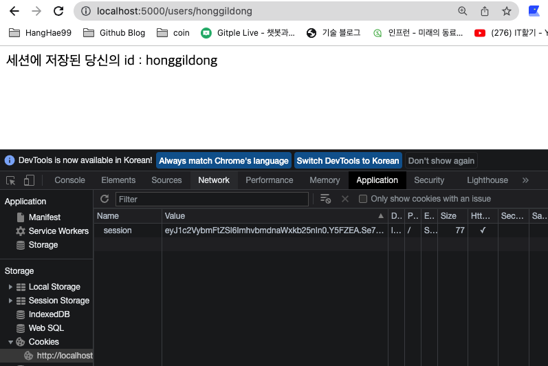
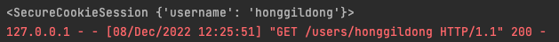
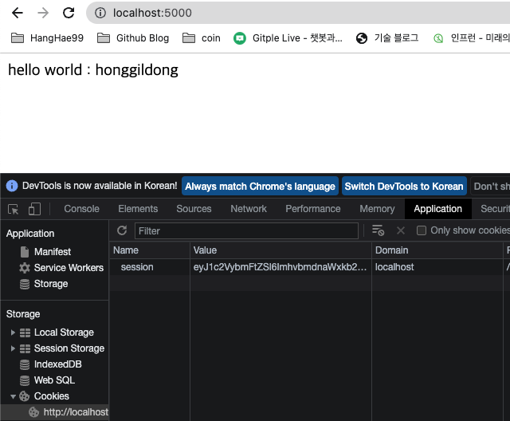
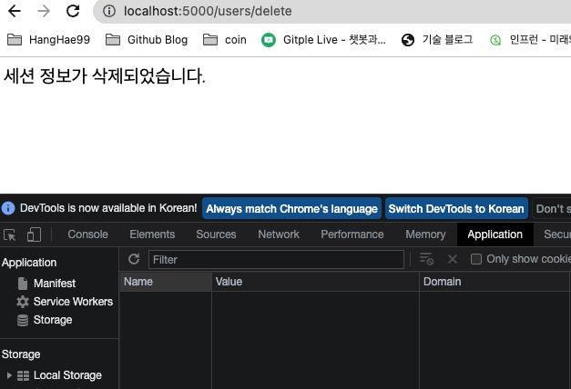
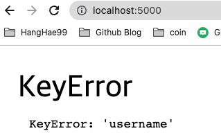
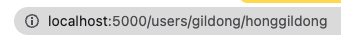
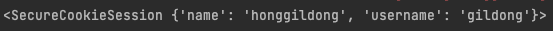
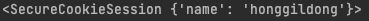
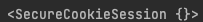

Flask Session
- 2021, 맥북 프로 M1 Pro 14인치 모델
- Ventura 13.1
Python 3.9
Flask 2.2.2
PyCharm 2022.2.3 (Professional Edition)
기본적으로 session, escape는 falsk 패키지에 포함되어 있다.
from flask import Flask
from flask import session, escape
세션 생성하기
- 세션 패키지를 임포트 해오고 서버를 킬 때 이미 세션이 생성되므로
세션에 값을 넣는다는 게 더 맞는 표현인 것 같다.
@app.route('/users/<id>')
def users(id):
# 세션에 'username'이라는 Key에 id라는 value를 추가했다.
session['username'] = id
print(session)
return '<p>세션에 저장된 당신의 id : %s</p>' % id
클라이언트 측 브라우저의 개발자 도구로 확인해 보면 쿠키에
세션 정보가 담긴 데이터가 하나 오는데,

이 Value 값은 (session[’’] = a)처럼 값을 담을 때 바뀌며
응답받은 페이지 하나당 하나의 세션 쿠키만을 가지고,
서버 측에서 같은 세션을 공유하는 경우 (a = session[’’])에는 바뀌지 않는다.
이 Value 값은 개발자 도구에서 바꿀 수 있는데
바꾸는 경우 서버에 가지고 갈 열쇠의 모양이 바뀌었다고 생각해도
되기 때문에 서버에 있는 세션 안 데이터를 가저 오지 못할 것이다.
서버에서 본 세션에 담긴 정보

클라이언트 측 -> 서버에 가지고 갈 열쇠, 세션 안 데이터가 아닌 세션을 가리키고 있는 정보인 쿠키를 들고 서버에 간다.
서버 측 -> 클라이언트가 들고 온 열쇠가 서버에 세션과 맞는지 확인 후 서버의 세션에 저장된 데이터를 사용한다.
index page
@app.route('/')
def index():
id = session['username']
return '<p>hello world : %s</p>' % id
이미 저장되어 있기 때문에 어떠한 url로 접속해도 username이 남아있다.
(세션 생성되는 부분에서 스크린샷을 찍고 여러 번 생성을 해서 세션 쿠키 Value 값이 다릅니다.)

세션 정보를 삭제해 보았다.
@app.route('/users/delete')
def user_delete():
session.pop('username', None)
return '세션 정보가 삭제되었습니다.'

이후 세션이 남아있나 확인을 하려고 / <- url로 들어가면? 아래와 같은 에러가 발생한다.

에러가 난 이유는??
세션을 삭제했기 때문에,
session[‘username’]에서 ‘username’을 찾을 수 없어 나는 에러이다.
그러므로 세션 값이 존재하는지 안 하는지부터 확인을 하고 다음 로직으로 넘겨야 한다!
if('username' in session):
print("세션 있음")
return '<p>{}님 안녕하세요.'.format(escape(session['username'])) + '</p>'
else:
print("세션 없음")
return '<p>로그인해 주세요.</p>'
pop()과 clear()의 차이?
@app.route('/users/<id>/<name>')
def users(id, name):
session['username'] = id
session['name'] = name
print(session)
return '완료'


위와 같이 사용한다고 치면! ( 세션에 여러 데이터가 담긴 경우 )
pop으로 username을 삭제한 경우
## session.clear()와 차이는?
session.pop('username', None)
print(session)
아래처럼 pop으로 제거한 내용만 제거되고 나머지 값은 남아있지만

clear()로 삭제한 경우
@app.route('/users/delete')
def user_delete():
session.clear()
print(session)
return '세션 정보가 삭제되었습니다.'
clear의 경우 세션 안 모든 값을 삭제한다.

++ 여러 url에서 세션에 값을 담는 경우
예를 들어 A라는 페이지는 유저의 ID, Name을 세션에 담고 B라는 페이지는 유저의 Age를 담는 경우
클라이언트는 응답받은 하나의 페이지(A)에서 한 개의 세션 벨류 값을 가지고,
B라는 페이지에 접속 시 다른 벨류 값을 가진 세션 쿠키를 가지고 오지만,
서버에서의 세션 데이터인 ID, Name, Age는 변하지 않는다. -> B 페이지의 쿠키 값만 가지고 있어도 ID, Name, Age 사용 가능